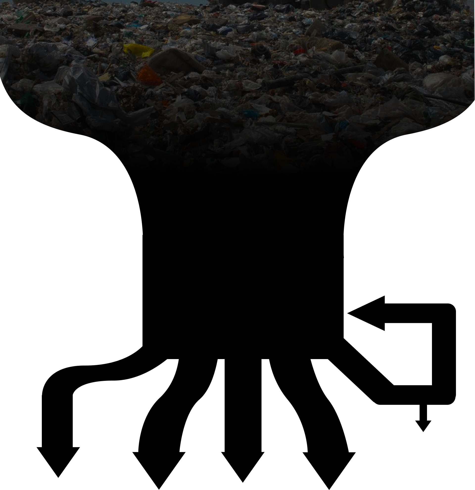
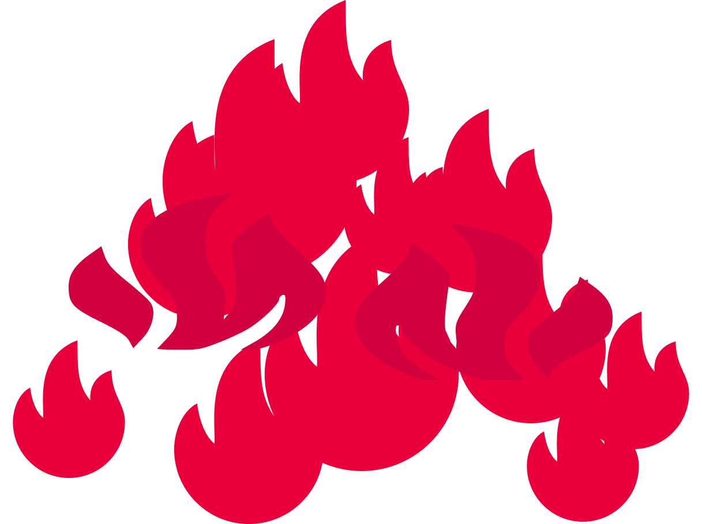
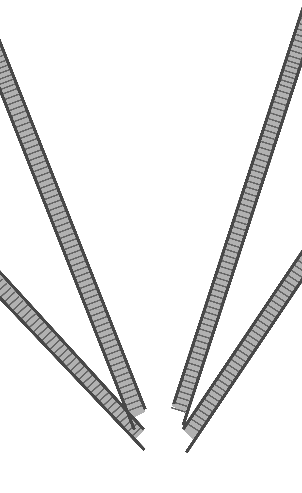
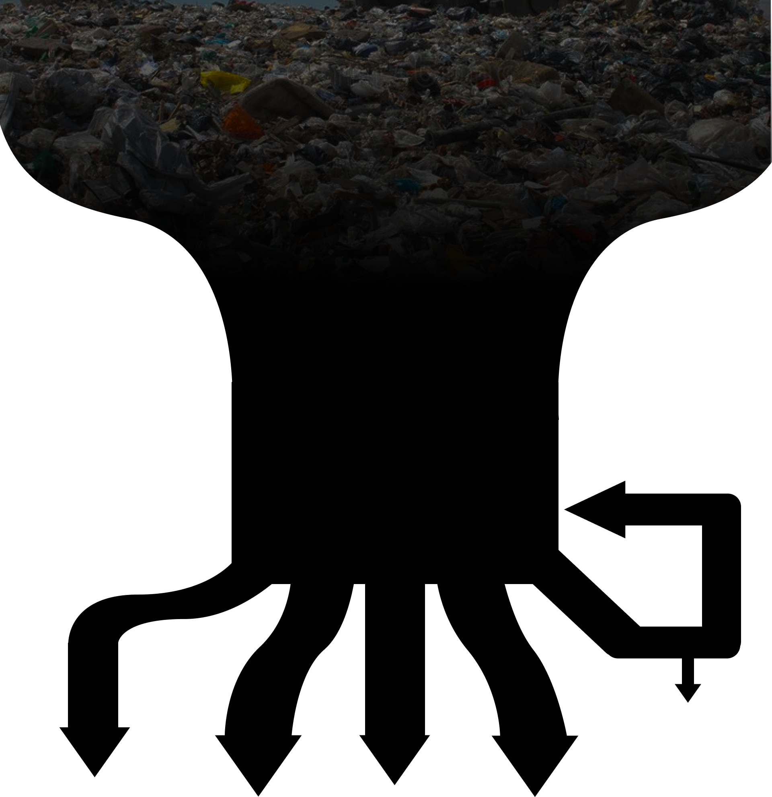
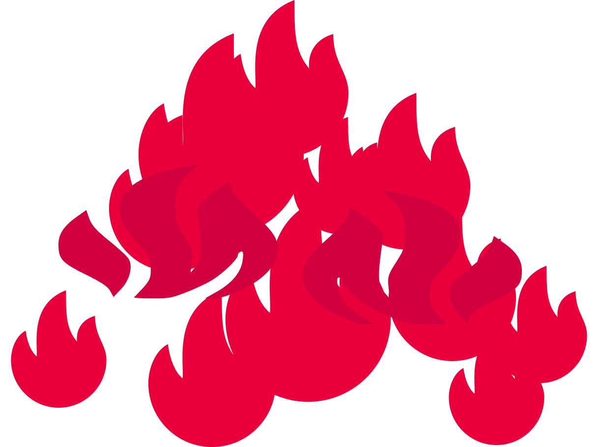
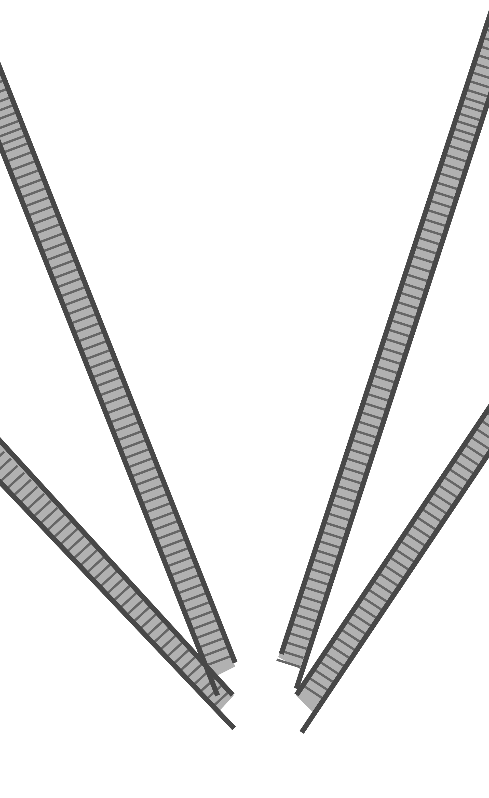
 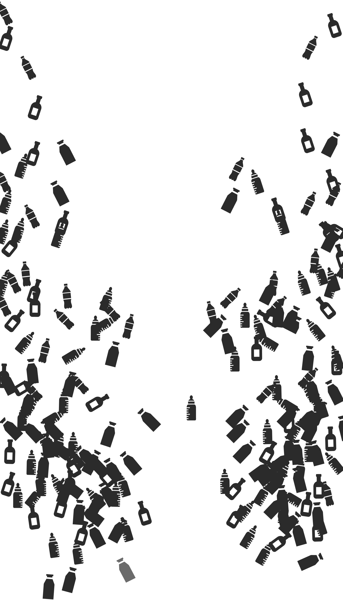
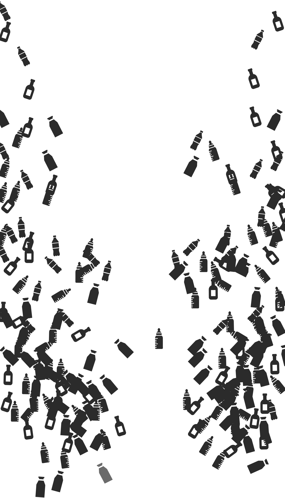
대한민국
플라스틱 재활용률
56.7%
세계 1위
!!
·
·
·
·
·
·
·
·
·
·
·

플라스틱 재활용
-진실과 한계
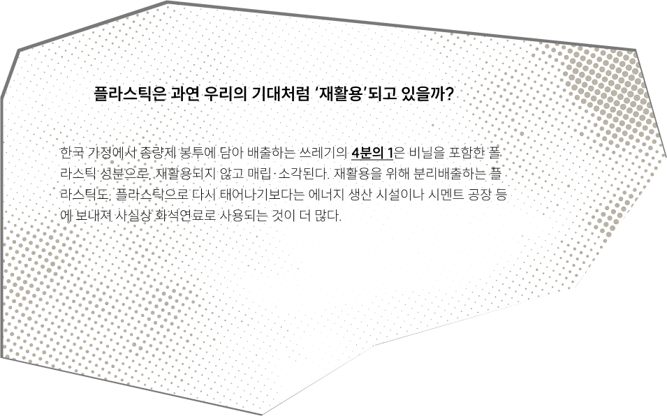
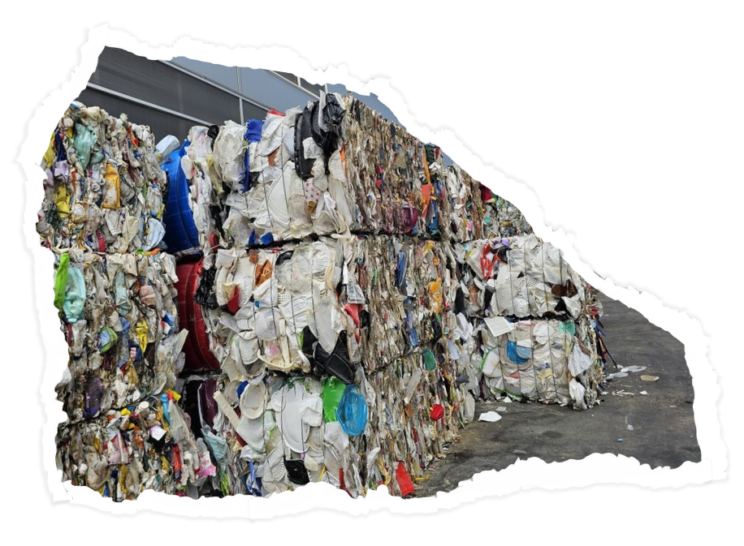
생산부터 폐기까지
*단위 : 2021년/천 톤
생활계 폐기물 내 플라스틱
(4682)
분리배출 플라스틱
(2792)
혼합배출 플라스틱
(1890)
물질재활용
(16.4%,766)
해양·육상 유출
단순 소각
(에너지 회수 없음)
(에너지 회수 없음)
발전 등 에너지 회수
(12.8%, 600)
매립


잔재물
(38.2%, 1789)
(32.6%, 1529)
(정보 없음)
결국 플라스틱을 줄이기 위한 논의는 다시 ‘생산 감축’에 초점을 맞추게 된다. 김나라 그린피스 플라스틱
캠페이너는 이 상황을 “수도꼭지에서 물이 계속 나오고 있는 상황에 비유했다. 물을 받치는 용기를 바꾼다고 해서
물이 넘치는 걸 막을 수 없다는 것이다. 그는 “수도꼭지를 잠그는 것처럼 결국은 생산 감축이 필요하다”며 “정부가
소비자에게 분리배출, 폐기물 관리만 강조할 게 아니라 플라스틱을 생산·사용할 수밖에 없는 구조를 바꿀 수 있도록
산업계를 변화시켜야 한다고 말했다.
허승은 녹색연합 녹색사회팀장은 플라스틱이 기후위기를 재촉하는
측면을 지적하며, “온실가스 감축이 당연하게 받아들여지고 모든 분야에서 저감 대책이 시급하게 논의되는 것처럼
플라스틱 대책도 그런 흐름으로 가야 된다고 밝혔다.
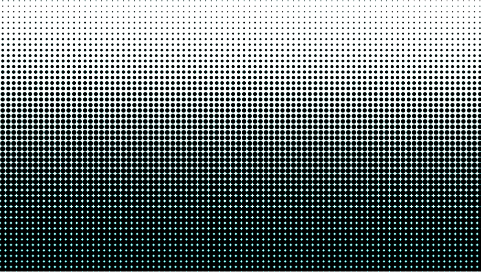 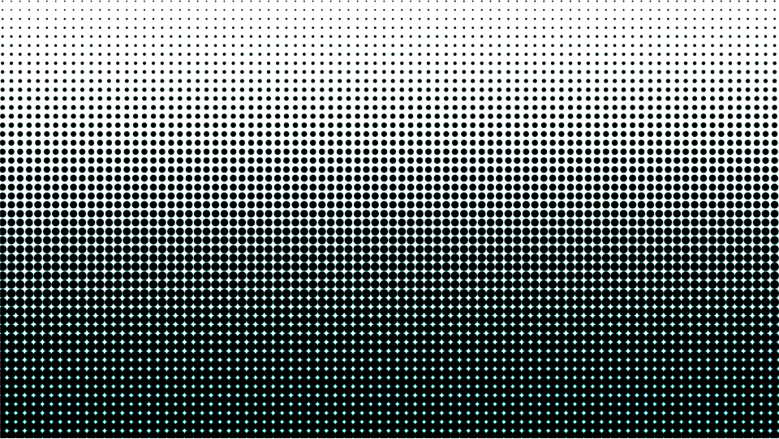
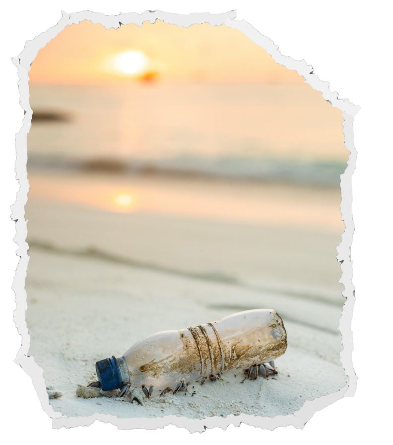
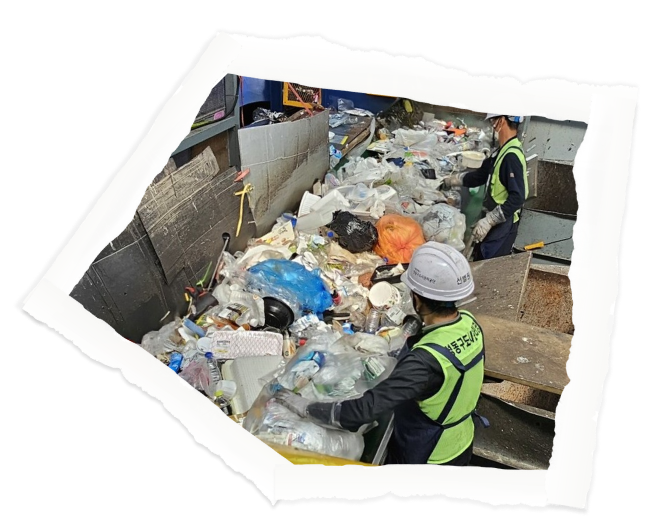
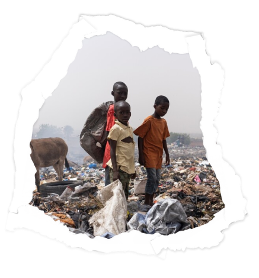